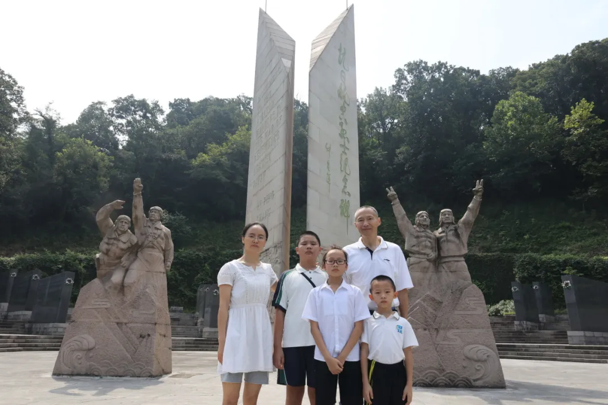
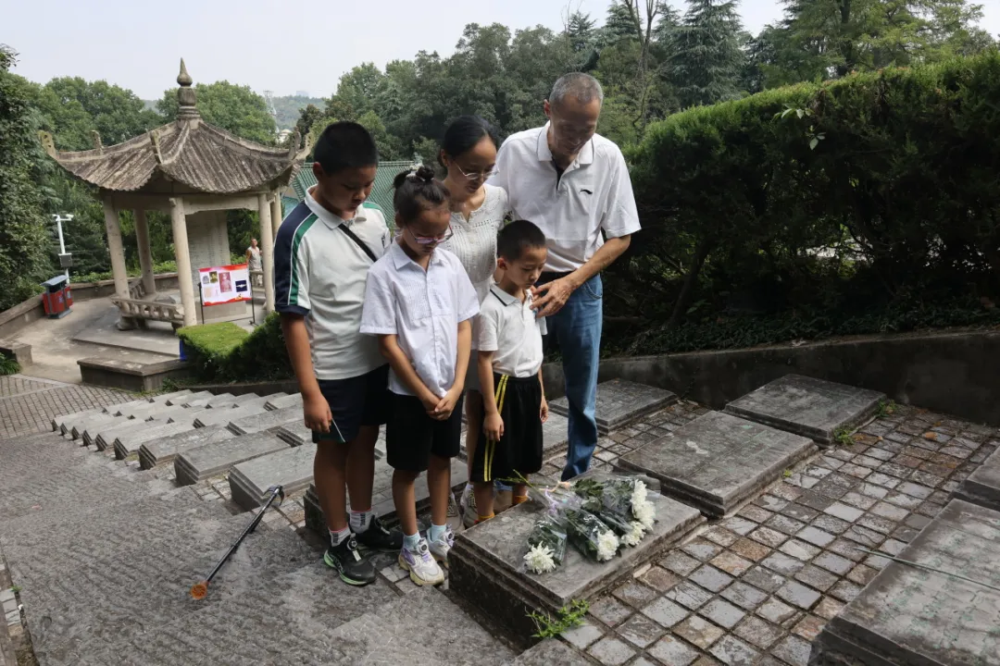
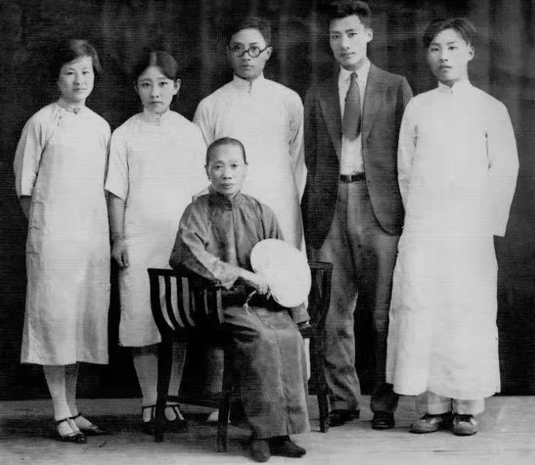
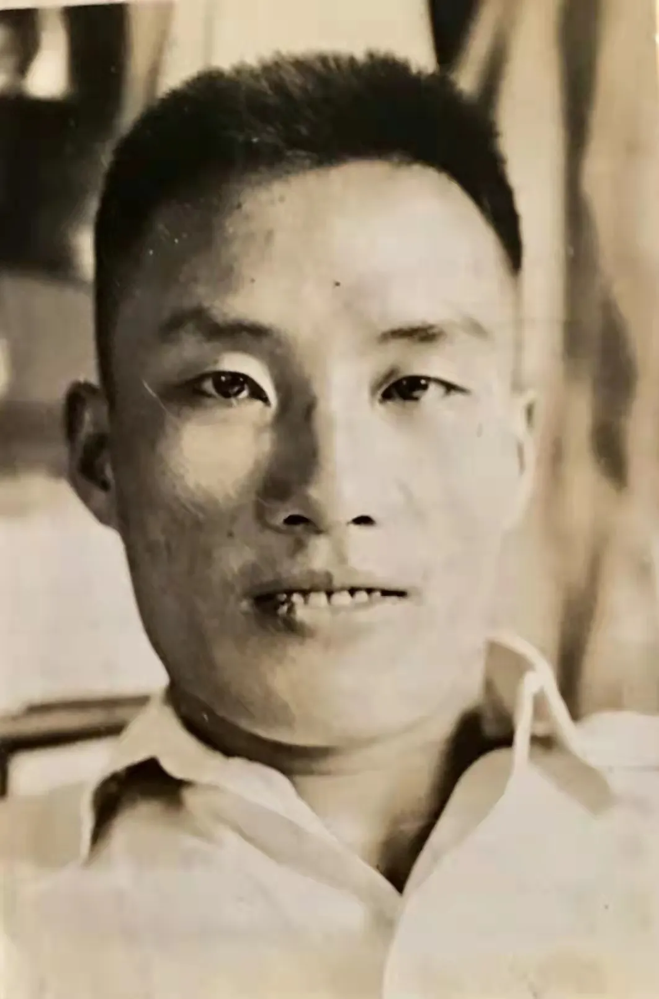
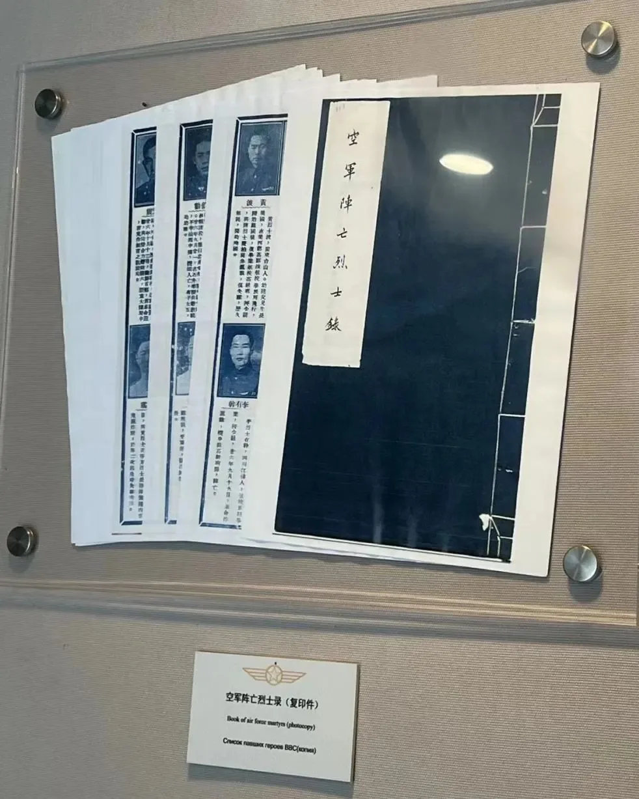
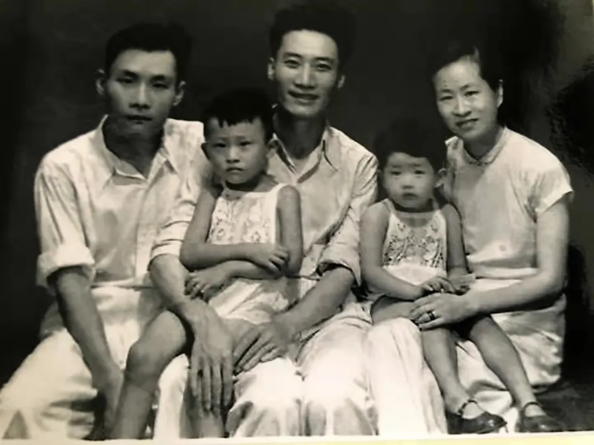
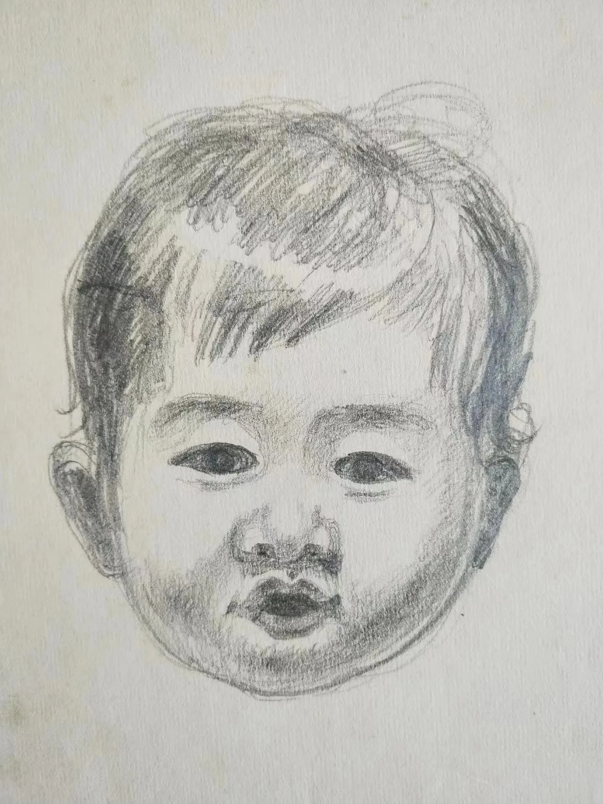
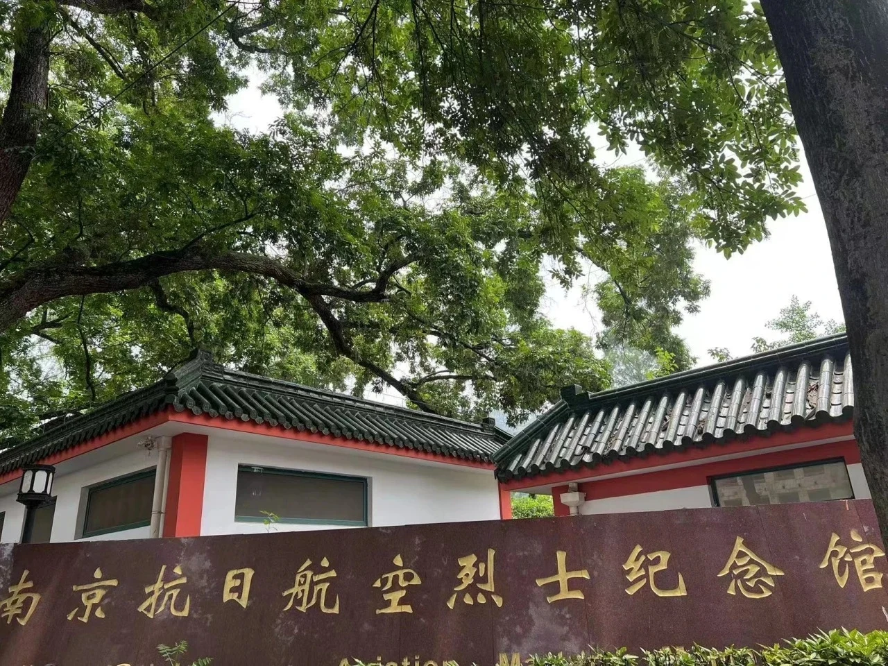
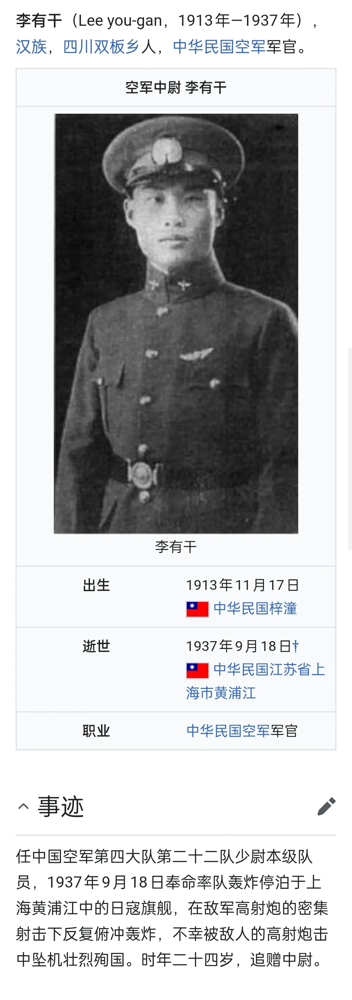

八月初的南京，正是一年中最热的时候。我们一家驱车500公里，来到南京抗日航空烈士纪念馆和陵园，来祭扫我们家的抗日英烈李有幹。

事情还要从二十年前说起。我父亲李守中，年过七十后，撰写完我们李家的家族史《渔舟唱晚》(连载在新浪微博上)。当写到他的叔叔李有幹时，他把我爷爷李有行写的纪念长文《忆幹弟》，全文放入家族史中。紧接着，他还伤感地写到：
爸爸这篇回忆录记于民国二十六年十二月二十二日常德武陵花园。 叔叔遗下的照片我都见过，它们整齐的贴在爸爸自制的像册上，上面写着、"纪念亡弟群翼" 惜像册已毁于一九六六年某日了，爸爸过世之后，我认为世上只有我仍在怀念叔叔。 匆匆到了1987年，一次偶然机会我在《电影世界》杂志上读到介绍《笕桥英烈传》电影的短文，该影片摄于台湾，时为1976年，该片记下了空军勇士高志航率部于1937年奋起抗敌的悲壮事迹，在其中亦提到叔叔，不久我又在昆明街头买到了该片影碟。 从那篇短文中我还知道在南京的空军烈士陵园中还铭刻着他们的姓名。 啊！叔叔，海峡两岸都有人在怀念着你和你的队友们。 （摘录自李守中《渔舟唱晚》）
在纪念馆三位工作人员的引领和陪同下，我们来到李有幹的卧碑前。

职级：少尉飞行员 姓名：李有幹 殉职事略：烈士四川江油人中央航校五期乙班毕业任空军四大队廿二队飞行员一九三七年九月十八日夜袭上海汇山码头日军被敌高炮击中阵亡追赠中尉
四川江油，我爷爷，我父亲，还有我，长久以来，也一直是这样在表格上填写籍贯的。直到1994年，四川梓潼县建立了我爷爷李有行的纪念馆，我们才第一次知道，我们李家的籍贯已经变更为四川梓潼。原来，我们李家的祖居地，是在川北古商道一个三岔路口，自然聚居而成的一个叫双板的乡镇。双板镇的居民村落，也被那个岔路口自然分割成三部分，并在历史上分属江油、梓潼和剑阁三县。李家祖宅坐落在属于江油的那一部分村落里。1949年后，双板乡整体划归了梓潼县。
李有幹的出生地，是北京。
大约在1905年夏秋之际，我曾祖父李白民离开家乡，进京赶考。恰逢清朝末年大举开办新政，他幸运地考入北平警察局，在下辖的消防队里做秘书，并很快得到提拔。1910年，我曾祖父李白民回乡接妻子徐氏、长子李有度和次子李有行进京。三年后，老三李有幹在北京出生。
我曾祖父虽然接受的是传统教育，却能很好地适应新时代，有能力在京城体面养家，还有余力寄钱回乡置地。但他的三个儿子都是"逆子"。老大李有度考入北京大学英语系，却放着好好的书不读，成天上街游行去，是个妥妥的"五四"青年。老二李有行，不肯听从父亲的安排进商学校，死活要学画画，先考入北平艺术专科学校(中央美院的前身)，然后又远赴法国留学。
老三李有幹因为年龄最小，还没有来得及搞出什么幺蛾子来，我曾祖父李白民就病逝了。也幸亏他老人家早走了一步，避免了被他小儿子气死。

父亲去世了，大哥在外自立了，二哥远在法国，家里只剩母亲和十五岁的小儿子李有幹。一天，李有幹放学回家，佯装做作业，乘母亲不备，偷了家里存折，不辞而别。等到母亲反应过来，当场晕倒。一个十五岁的少年，带着几百块大洋的巨款不知去向，那还不惹来杀身之祸？
原来，李有幹听信同学说去南洋投靠他家的亲戚，可以发大财。他就慷慨许诺出路费，二人私自离家，从天津上船直航马来西亚。母亲大半年后，才得知他在南洋，总算结束了茶饭不思，惶惶不可终日的日子，去信要他回来，他却不肯，没有发财就不回家。三年之后，他在南洋实在是走投无路了，才让家里寄钱来买船票回家。
打野三年，连吓带气带担心，使我曾祖母的身体大受损害。还好，她老人家活着看到了他留学归来的二儿子，也看到了那个最让人操心的小儿子，成为了空军飞行员，一身戎装，英气逼人。她又恰好没有活得太长，避免了经历丧子之痛，避免了经历因为日本侵略而家破人亡。
1937年9月18日夜晚，国民革命军空军少尉飞行员李有幹(追授中尉)从南京起飞，去轰炸停泊在黄浦江上的日本侵略军旗舰，被高射炮击中，血洒长空，壮烈殉国，时年23岁。影片《笕桥英烈传》中，李有幹的未婚妻由刚出道的胡因梦饰演，但李有幹实际上并没有未婚妻。我爷爷含泪收拾他的遗物时，在他的遗物中，连一点有女朋友的迹象都看不出。比如女孩子的照片，或是其它信物，一件也没有。


我爷爷在他的长文《忆幹弟》中，深情回忆了他和他弟弟的少年时光，以及他参军后的种种事迹。最为难得的是，他还非常详细地记录了他应邀参加毕业典礼的全过程，毕业典礼由蒋介石亲自主持。《忆幹弟》的后半部分，是讲述他是怎样得知李有幹壮烈牺牲的，以及他去收拾李有幹的遗物。我每次读到这里，都非常难过。我爷爷和他弟弟感情那么深厚，却只有二张合影，不知躲过了多少劫难而幸存了下来。

在我爷爷的《忆幹弟》中，提到过李有幹也喜欢画画。应该是在上海治疗口腔创伤时，他给他的小侄女李治初 (上面合影中的那个小女孩)画了这张素描。这件作品，竟成了李有幹留在世上的唯一一件物品。

这位小侄女，就是我姑姑，她是新中国首批国家级运动员，创造过女子跨栏国家记录。她已于2020年初去世。
从2021年起，每到9月18日，我就写一篇推文，发表在微信公众号上(鸽豹文化)，纪念我这位英勇的叔爷。"九一八"是国难日，也是我们李家的忌日。
三个月之前，李有幹侄孙媳妇曹阳，是我们家来到南京抗日航空烈士纪念馆的第一人。
这次是我们家的第四代，第一次来到南京抗日航空烈士纪念馆和陵园来祭扫。今后，我们还会来，还会有更多的家人来祭扫我们李家的英烈。

补记
我以前就曾提到过，我们家李有幹的戎装照都在文革中失去了。这次在南京抗日航空烈士纪念馆中，看到了李有幹的戎装照。而且，就在我发出这篇推文前几天，我远在加拿大的朋友王妮，查到维基百科居然有李有幹的条目，里面戎装照这样清晰！

非常感谢王妮女士！王女士是我爷爷的学生王邦汜和周宝华的女儿。她的故事我们将在今后陆续播出。